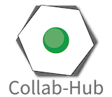
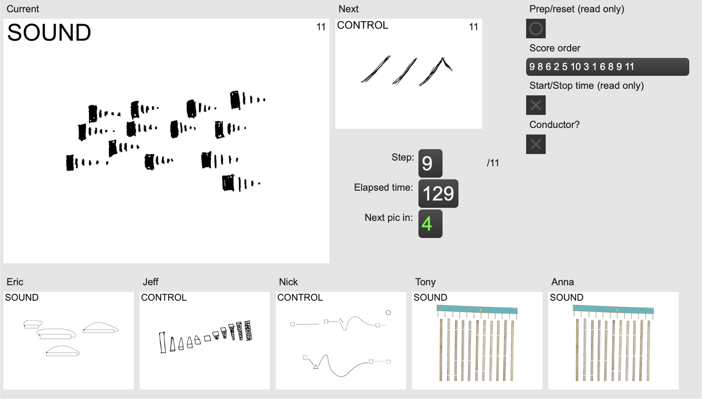
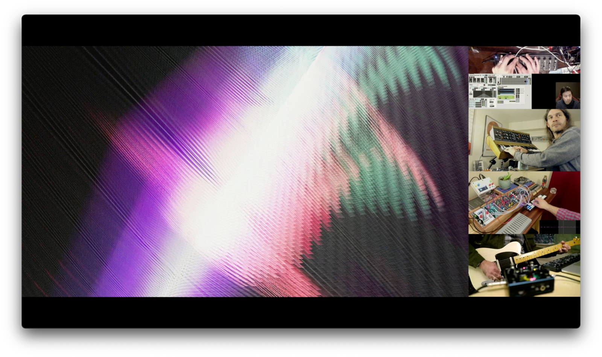
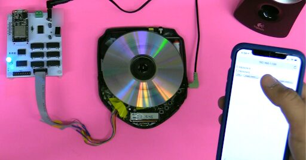

<!doctype html><html lang="en"><head><meta charset="utf-8"><meta name="viewport" content="width=device-width,initial-scale=1">
<title>Using Collab-Hub for local/remote networked audiovisual collaboration</title><link rel="stylesheet" href="../../../style.css"></head><body>
<header class="site"><a href="../../../index.html">NIME 2021–2022 archive</a> <span class="muted">experimental static edition of the PubPub proceedings</span></header>
<main><nav class="muted"><a href="../../../index.html">Archive</a> › <a href="../../index.html">2021</a> › <a href="../index.html">Workshops</a></nav><article><h1 class="title">Using Collab-Hub for local/remote networked audiovisual collaboration</h1>
<div class="byline">Nick Hwang<sup>1</sup>, Anthony T. Marasco<sup>2</sup>, Eric Sheffield<sup>3</sup><div class="aff"><sup>1</sup>University of Wisconsin-Whitewater, ; <sup>2</sup>University of Texas Rio Grande Valley, ; <sup>3</sup>SUNY Broome</div></div>
<div class="meta"><b>Track</b><span>Workshops · NIME 2021 · Shanghai (online)</span><b>DOI</b><span><a href="https://doi.org/10.21428/92fbeb44.2636f4dd">10.21428/92fbeb44.2636f4dd</a></span><b>Version of record</b><span><a href="https://nime.pubpub.org/pub/wwxuyk48">https://nime.pubpub.org/pub/wwxuyk48</a></span><b>PDF</b><span><a href="https://nime.pubpub.org/pub/wwxuyk48/download/pdf">PubPub PDF</a> · author-supplied PDF in archive: <code>vf2hh530whocuj9x1vncu7e3fr4wyu2y.pdf</code></span><b>Other external links</b><span><a href="https://youtu.be/2ewFgrTuzBE">https://youtu.be/2ewFgrTuzBE</a> <span class="badge ok">link live</span> <span class="muted">SHP of THSEUS - RE/SHFT/ER</span></span><b>Licence</b><span>CC BY 4.0</span></div>
<div class="editor"><h1 id="workshop-title">Workshop Title</h1><p>Using Collab-Hub for local/remote networked audiovisual collaboration</p><h1 id="description">Description </h1><p>This workshop serves as an introduction to building networked collaborative audiovisual performances and pedagogical tools using Collab-Hub, a package for remote collaboration based on Node.js and implemented within Max and as a web-based interface. Collab-Hub is a system built for sharing various types of data and allows for different types of communication models (like pubsub, event, and broadcast). Collab-Hub also eliminates the need for collaborators to be aware of their/each others’ IP address. It has applications in many performance paradigms, including telematic performance, laptop orchestra, mixed ensemble with digital elements, distributed control, net-to-physical interaction, and more.</p><p>Participants will be guided through the setup process of a basic Collab-Hub configuration using Max that can then be further developed for their own audiovisual performance or pedagogical needs. Participants will practice sharing collaborative data, and will then be able to communicate amongst each other within a collaborative performance. </p><p>Facilitators will also provide basic templates/code bases for participants to keep and expand into larger projects of their own. Some prior knowledge of Max will be helpful but not necessary. A registered copy of Max (for the purposes of saving edits) is necessary. All of the software is free to download and use. </p><p>The workshop facilitators will present an overview of their experiences developing projects with Collab-Hub that demonstrate different network performance paradigms—local, remote (telematic), and embedded (Internet of Things). Facilitators will show examples beyond basic implementations as well as existing implementations using other tools like PD, Web Interfaces, art installations, and Unity.</p><h3 id="session-plan---half-day-4-hours-scheduled">Session Plan - Half day (4 hours scheduled) </h3><ul id="nvu5sj9cbec"><li><p><strong>Introductions and Overview</strong></p><p>Overview of Collab-Hub and Networked Audiovisual Performance practices. Discussion of networked audiovisual collaborative design and considerations (30 minutes)</p><p></p></li><li><p><strong>Setting up a Networked Performance Environment</strong></p><p>Installation of Collab-Hub software (client software), walkthrough of client-server communication, establishing connecting with the server, and practice sending data to the server. (40 minutes guided walkthrough, 20 minutes group test/troubleshooting) </p><p></p></li><li><p><strong>Sending, Subscribing, Mapping</strong></p><p>Work through examples of the communication paradigms within Collab-Hub. Participants will practice broadcasting, subscribing, joining/leaving rooms. (30 minutes)</p><p></p></li><li><p><strong>Deeper Examples and Discussion</strong></p><p>Facilitators will show examples of existing implementations of Collab-Hub, pedagogical examples, and implementations using tools beyond Max. (30 </p><p>minutes)</p><p></p></li><li><p><strong>Group Breakout and Collaborative Performance</strong></p><p>Participants will brainstorm, coordinate, rehearse, and perform a collaborative performance using Collab-Hub. (60 minute group session)</p><p></p></li><li><p><strong>Future Work, Discussion, and Questions</strong></p><p>Future developments for Collab-Hub and collaborative networked audiovisual performance. (30 minutes)</p></li></ul><h1 id="short-description">Short Description </h1><p>This workshop serves as an introduction to building remote/local networked collaborative audiovisual performances and pedagogical tools using Collab-Hub, a package for remote collaboration based on Node.js and implemented within Max and as a web-based interface. </p><p>Collab-Hub is a system built for sharing of data and eliminates the need for collaborators to be aware of their/each others’ IP address. It has applications in many performance paradigms, including telematic performance, laptop orchestra, mixed ensemble with digital elements, distributed control, net-to-physical interaction, and more. </p><p>We will integrate Collab-Hub into our Max projects (examples will be provided), and we will use Collab-Hub in collaborative networked performance.</p><h1 id="organizers">Organizers</h1><h3 id="nick-hwang">Nick Hwang</h3><p>University of Wisconsin-Whitewater, Media Arts and Game Development, email: hwangn@uww.edu, website: <a href="https://nickhwang.com/">https://nickhwang.com</a></p><p>Nick Hwang is a composer and sonic artist interested in interactivity, collaborative systems, and gameful performance. He is an Assistant Professor in the Media Arts and Game Development program at University of Wisconsin-Whitewater. He has presented and shown work at New Interfaces of Musical Expression (NIME), the Society for Electro-Acoustic Music in the U.S. (SEAMUS), the International Computer Music Conference (ICMC), ISEA, SIGGRAPH, NowNet Arts, NYCEMF, Web Audio Conference, Root Signals, MoxSonic, and the National Student Electronic Music Event (NSEME).</p><h3 id="anthony-t-marasco">Anthony T. Marasco</h3><p>University of Texas Rio Grande Valley, Music Technology and Composition, School of Music, email: anthony.marasco@utrgv.edu, website: <a href="http://atmarasco.com/">http://atmarasco.com/</a> </p><p>Anthony T. Marasco is an Assistant Professor of Music Technology and Composition at the University of Texas Rio Grande Valley. As a composer and sound artist, his works take influence from the aesthetics of today&#x27;s Digimodernist culture, exploring the relationships between the eccentric and the everyday, the strict and the indeterminate, and the retro and the contemporary. His works and research have been featured at festivals such as New Interfaces for Musical Expression (NIME), the Web Audio Conference, the Toronto International Electroacoustic Symposium, the Society for Electro-Acoustic Music in the U.S. (SEAMUS), Electroacoustic Barn Dance, New York City Electroacoustic Music Festival, the International Computer Music Conference (ICMC), the National Student Electronic Music Event (NSEME), Mise-En Festival, Montreal Contemporary Music Lab, Electric LaTex, and the Sound, Image and Interaction Design Symposium (SIIDS). </p><h3 id="eric-sheffield">Eric Sheffield</h3><p>SUNY Broome, Department of Music and Theater Arts, email: sheffielder@sunybroome.edu, website: <a href="https://www.ericsheffield.net/">https://www.ericsheffield.net</a></p><p>Eric Sheffield is a musician and maker currently interested in physics-based modeling, networked performance, and popular music. He received a PhD from the Experimental Music and Digital Media program at Louisiana State University. Eric has served as the tech director for the Electroacoustic Barn Dance and has performed and presented work internationally at several events, including NowNet Arts, NYCEMF, Root Signals, SEAMUS, NIME, and EMM. He is a founding member of the group Bell Monks, which has several releases available at music.bellmonks.com and on clang (clang.cl). He currently teaches music and recording as an assistant professor at SUNY Broome.</p><h1 id="preferred-length-of-workshop">Preferred Length of Workshop</h1><p>half-day / 4 hours</p><h1 id="technical-and-space-requirements">Technical and Space Requirements</h1><p>We will be prepared to present this workshop of either in-person or remote modality.</p><p><strong>In-person Considerations</strong></p><ul id="nkcus44nbyl"><li><p>Projection screen and sound system for slides and presentations from laptop</p></li><li><p>Class or tutorial room with enough space for participants</p></li><li><p>Tables with space for each participant to have their laptop</p></li><li><p>Internet connections for all participants (for downloading code and for networking)</p></li><li><p>Power strips for plugging in laptops</p></li></ul><p>Note: facilitators will bring wireless routers to assist with networking in the case that on-site WiFi is experiencing issues</p><p><strong>Remote Considerations</strong></p><ul id="ndwpqq1bdgl"><li><p>Video Conferencing platform which allows for breakout rooms</p></li><li><p>List of participant emails to send relevant links prior to session</p></li></ul><h1 id="links-to-supporting-media">Links to Supporting Media </h1><p>Collab-Hub already has a web page (Collab-Hub.io) and a section devoted to workshop materials will be updated with a complete schedule and downloadable material before NIME. We intend to document the community&#x27;s ideas on networked performance environments in order to develop future directions and new research ideas. It is our hope that these tutorials and our workshop will create more artworks, research, and conversations at NIME regarding collaborative networked audiovisual performances.</p><ul id="nahy0h1gvpy"><li><p>Collab-Hub web page: <a href="https://collab-hub.io/">https://collab-hub.io</a></p></li><li><p>Videos - Performances, Discussion, and Weekly Jams with Collab-Hub: <a href="https://www.youtube.com/playlist?list=PLDRHBrWLcIk8ZYUqIuQO7xpK3IjMVYERn">https://www.youtube.com/playlist?list=PLDRHBrWLcIk8ZYUqIuQO7xpK3IjMVYERn</a></p></li><li><p>Collab-Hub has been used with </p><ul id="nc5i5mrb8s7"><li><p>Rhumbline (<a href="https://rhumbline.io/">https://Rhumbline.io</a>)</p></li><li><p>RE/SHFT/ER <em>SHP of THSEUS </em>(<a href="https://aweisling.com/#/shp-of-thseus/">https://aweisling.com/#/shp-of-thseus/</a> &amp; <a href="https://youtu.be/2ewFgrTuzBE">https://youtu.be/2ewFgrTuzBE</a>)</p></li><li><p>Ohio State University, Laptop Ensemble (Marc Ainger)</p></li><li><p>Flannery Cunningham (New York New Music Ensemble)</p><p></p><figure id="nyfgk8qv7f2" class="image"><a href="https://assets.pubpub.org/z3rxq22l/31614573298353.png"></a><figcaption id="nyfgk8qv7f2-figure-caption"><div><div></div></div></figcaption></figure><p></p></li></ul><figure id="nq2mk872lh3" class="image"><a href="https://assets.pubpub.org/wuxsncce/31614573202162.png"></a><figcaption id="nq2mk872lh3-figure-caption"><div><div><p>Screenshot of a score patch using Collab-Hub to send music direction data to remote performers.</p></div></div></figcaption></figure></li></ul><p></p><p></p><p></p><p></p><p></p><p></p><p></p><p></p><p></p><figure id="n46e8s5c0m9" class="image"><a href="https://assets.pubpub.org/xcbunni1/31614573331300.png"></a><figcaption id="n46e8s5c0m9-figure-caption"><div><div><p>Screenshot of performance using Collab-Hub at for the Performing Media Festival~ 2021.<br></p></div></div></figcaption></figure><p></p><p></p><p></p><p></p><p></p><p></p><p></p><figure id="nqb9f2x2p1l" class="image"><a href="https://assets.pubpub.org/w9xrh0ek/31614573473147.png"></a><figcaption id="nqb9f2x2p1l-figure-caption"><div><div><p>Collab-Hub interfaces with other Bendit.io (https://www.benditio.com)</p></div></div></figcaption></figure><p></p><p></p><p></p><div class="pub-notes"></div></div></div>

</article></main>
<footer class="site">Built from Stefano Fasciani's December 2025 export of <a href="https://nime.pubpub.org">nime.pubpub.org</a>. Content © the authors, <a href="https://creativecommons.org/licenses/by/4.0/">CC BY 4.0</a>. The PubPub version is the version of record. <a href="https://github.com/NIME-conference/nime-website/issues/94">Discussion</a>.</footer>
</body></html>